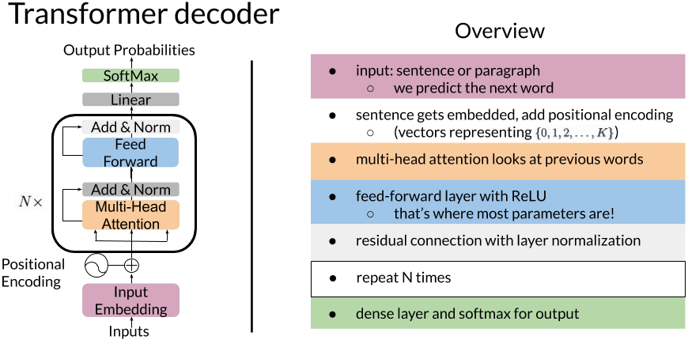

In this notebook, you’ll explore the transformer decoder and how to implement it with Trax.
Background
In the last lecture notebook, you saw how to translate the mathematics of attention into NumPy code. Here, you’ll see how multi-head causal attention fits into a GPT-2 transformer decoder, and how to build one with Trax layers. In the assignment notebook, you’ll implement causal attention from scratch, but here, you’ll exploit the handy-dandy tl.CausalAttention() layer.
The schematic below illustrates the components and flow of a transformer decoder. Note that while the algorithm diagram flows from the bottom to the top, the overview and subsequent Trax layer codes are top-down.

Imports
import sysimport osimport timeimport numpy as npimport ginimport textwrapwrapper = textwrap.TextWrapper(width=70)import traxfrom trax import layers as tlfrom trax.fastmath import numpy as jnp# to print the entire np arraynp.set_printoptions(threshold=sys.maxsize)
2025-02-06 21:16:47.818882: E external/local_xla/xla/stream_executor/cuda/cuda_fft.cc:477] Unable to register cuFFT factory: Attempting to register factory for plugin cuFFT when one has already been registered
WARNING: All log messages before absl::InitializeLog() is called are written to STDERR
E0000 00:00:1738869407.838227 1101293 cuda_dnn.cc:8310] Unable to register cuDNN factory: Attempting to register factory for plugin cuDNN when one has already been registered
E0000 00:00:1738869407.845388 1101293 cuda_blas.cc:1418] Unable to register cuBLAS factory: Attempting to register factory for plugin cuBLAS when one has already been registered
Sentence gets embedded, add positional encoding
Embed the words, then create vectors representing each word’s position in each sentence \in \{ 0, 1, 2, \ldots , K\} = range(max_len), where max_len = K+1)
def PositionalEncoder(vocab_size, d_model, dropout, max_len, mode):"""Returns a list of layers that: 1. takes a block of text as input, 2. embeds the words in that text, and 3. adds positional encoding, i.e. associates a number in range(max_len) with each word in each sentence of embedded input text The input is a list of tokenized blocks of text Args: vocab_size (int): vocab size. d_model (int): depth of embedding. dropout (float): dropout rate (how much to drop out). max_len (int): maximum symbol length for positional encoding. mode (str): 'train' or 'eval'. """# Embedding inputs and positional encoderreturn [ # Add embedding layer of dimension (vocab_size, d_model) tl.Embedding(vocab_size, d_model), # Use dropout with rate and mode specified tl.Dropout(rate=dropout, mode=mode), # Add positional encoding layer with maximum input length and mode specified tl.PositionalEncoding(max_len=max_len, mode=mode)]
Multi-head causal attention
The layers and array dimensions involved in multi-head causal attention (which looks at previous words in the input text) are summarized in the figure below:
tl.CausalAttention() does all of this for you! You might be wondering, though, whether you need to pass in your input text 3 times, since for causal attention, the queries Q, keys K, and values V all come from the same source. Fortunately, tl.CausalAttention() handles this as well by making use of the tl.Branch() combinator layer. In general, each branch within a tl.Branch() layer performs parallel operations on copies of the layer’s inputs. For causal attention, each branch (representing Q, K, and V) applies a linear transformation (i.e. a dense layer without a subsequent activation) to its copy of the input, then splits that result into heads. You can see the syntax for this in the screenshot from the trax.layers.attention.pysource code below:
Feed-forward layer
Typically ends with a ReLU activation, but we’ll leave open the possibility of a different activation
Most of the parameters are here
def FeedForward(d_model, d_ff, dropout, mode, ff_activation):"""Returns a list of layers that implements a feed-forward block. The input is an activation tensor. Args: d_model (int): depth of embedding. d_ff (int): depth of feed-forward layer. dropout (float): dropout rate (how much to drop out). mode (str): 'train' or 'eval'. ff_activation (function): the non-linearity in feed-forward layer. Returns: list: list of trax.layers.combinators.Serial that maps an activation tensor to an activation tensor. """# Create feed-forward block (list) with two dense layers with dropout and input normalizedreturn [ # Normalize layer inputs tl.LayerNorm(), # Add first feed forward (dense) layer (don't forget to set the correct value for n_units) tl.Dense(d_ff), # Add activation function passed in as a parameter (you need to call it!) ff_activation(), # Generally ReLU# Add dropout with rate and mode specified (i.e., don't use dropout during evaluation) tl.Dropout(rate=dropout, mode=mode), # Add second feed forward layer (don't forget to set the correct value for n_units) tl.Dense(d_model), # Add dropout with rate and mode specified (i.e., don't use dropout during evaluation) tl.Dropout(rate=dropout, mode=mode) ]
Decoder block
Here, we return a list containing two residual blocks. The first wraps around the causal attention layer, whose inputs are normalized and to which we apply dropout regulation. The second wraps around the feed-forward layer. You may notice that the second call to tl.Residual() doesn’t call a normalization layer before calling the feed-forward layer. This is because the normalization layer is included in the feed-forward layer.
def DecoderBlock(d_model, d_ff, n_heads, dropout, mode, ff_activation):"""Returns a list of layers that implements a Transformer decoder block. The input is an activation tensor. Args: d_model (int): depth of embedding. d_ff (int): depth of feed-forward layer. n_heads (int): number of attention heads. dropout (float): dropout rate (how much to drop out). mode (str): 'train' or 'eval'. ff_activation (function): the non-linearity in feed-forward layer. Returns: list: list of trax.layers.combinators.Serial that maps an activation tensor to an activation tensor. """# Add list of two Residual blocks: the attention with normalization and dropout and feed-forward blocksreturn [ tl.Residual(# Normalize layer input tl.LayerNorm(), # Add causal attention tl.CausalAttention(d_feature, n_heads=n_heads, dropout=dropout, mode=mode) ), tl.Residual(# Add feed-forward block# We don't need to normalize the layer inputs here. The feed-forward block takes care of that for us. FeedForward(d_model, d_ff, dropout, mode, ff_activation) ), ]
The transformer decoder: putting it all together
A.k.a. repeat N times, dense layer and softmax for output
def TransformerLM(vocab_size=33300, d_model=512, d_ff=2048, n_layers=6, n_heads=8, dropout=0.1, max_len=4096, mode='train', ff_activation=tl.Relu):"""Returns a Transformer language model. The input to the model is a tensor of tokens. (This model uses only the decoder part of the overall Transformer.) Args: vocab_size (int): vocab size. d_model (int): depth of embedding. d_ff (int): depth of feed-forward layer. n_layers (int): number of decoder layers. n_heads (int): number of attention heads. dropout (float): dropout rate (how much to drop out). max_len (int): maximum symbol length for positional encoding. mode (str): 'train', 'eval' or 'predict', predict mode is for fast inference. ff_activation (function): the non-linearity in feed-forward layer. Returns: trax.layers.combinators.Serial: A Transformer language model as a layer that maps from a tensor of tokens to activations over a vocab set. """# Create stack (list) of decoder blocks with n_layers with necessary parameters decoder_blocks = [ DecoderBlock(d_model, d_ff, n_heads, dropout, mode, ff_activation) for _ inrange(n_layers)] # Create the complete model as written in the figurereturn tl.Serial(# Use teacher forcing (feed output of previous step to current step) tl.ShiftRight(mode=mode), # Add embedding inputs and positional encoder PositionalEncoder(vocab_size, d_model, dropout, max_len, mode),# Add decoder blocks decoder_blocks, # Normalize layer tl.LayerNorm(), # Add dense layer of vocab_size (since need to select a word to translate to)# (a.k.a., logits layer. Note: activation already set by ff_activation) tl.Dense(vocab_size), # Get probabilities with Logsoftmax tl.LogSoftmax() )
Concluding remarks
In this week’s assignment, you’ll see how to train a transformer decoder on the cnn_dailymail dataset, available from TensorFlow Datasets (part of TensorFlow Data Services). Because training such a model from scratch is time-intensive, you’ll use a pre-trained model to summarize documents later in the assignment. Due to time and storage concerns, we will also not train the decoder on a different summarization dataset in this lab. If you have the time and space, we encourage you to explore the other summarization datasets at TensorFlow Datasets. Which of them might suit your purposes better than the cnn_dailymail dataset? Where else can you find datasets for text summarization models?